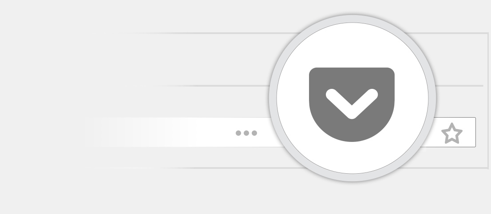

{# This Source Code Form is subject to the terms of the Mozilla Public #
License, v. 2.0. If a copy of the MPL was not distributed with this # file, You
can obtain one at http://mozilla.org/MPL/2.0/. -#}

{% extends 'base.html' %}
{% block page_title %}Pocket: How to save{% endblock %} {% block content %}

<div class="add-page">
  <header>
    <h2>Save to Pocket from Firefox</h2>
    <div class="add-header">
      <div class="add-header__image"></div>
      <div class="add-header__info">
        <p>
          Click the Pocket button in your Firefox toolbar to save articles, videos,
          pages, and more.
        </p>
        <a href="https://help.getpocket.com/article/900-saving-to-pocket-and-viewing-your-list-in-firefox" class="btn red-btn" target="_blank" rel="noopener noreferrer">Learn How</a>
        <p>
          <a
          href="https://help.getpocket.com/article/942-where-is-the-pocket-button-in-firefox"
          class="inline-link" target="_blank" rel="noopener noreferrer">
          Don't see the Pocket button?
        </a>
      </p>
    </div>
    </div>
</header>
<main>
  <div>
    <h2>View from any Device</h2>
    <ul>
      <li>Windows</li>
      <li>Kobo e-reader</li>
      <li>Windows Mobile</li>
      <li>Blackberry</li>
      <li>More Apps</li>
    </ul>
  </div>
  <div>
    <div>
      <h2>Unlimited Ways to Save</h2>
      <h3>Save via e-mail</h3>
      <p>email any link to your list by sending it to add@getpocket.com</p>
      <a
      href="https://help.getpocket.com/article/1020-saving-to-pocket-via-email" target="_blank" rel="noopener noreferrer"
      >Learn more</a
      >
    </div>
    <div>
      <h3>Integrated in 1500+ Apps</h3>
      <p>Save to Pocket using your favorite apps, such as:</p>
      <ul>
        <li>Twitter Apps</li>
        <li>News Apps</li>
        <li>More</li>
      </ul>
    </div>
  </div>
</main>
</div>
{% endblock %}
